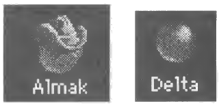
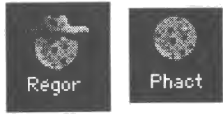
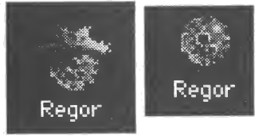
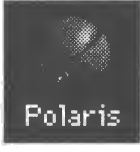

Explorer les planètes : température et gravité
À un moment donné, vous voudrez quitter votre planète d’origine et faire quelques efforts pour explorer les étoiles voisines à la recherche d’autres planètes habitables. Chaque planète a deux caractéristiques importantes : la température et la gravité.
La température représente tout ce que vous pouvez changer dans un système stellaire, du contenu de l’atmosphère à l’écologie de la planète. Votre planète d’origine est à 72°. Quand vous dépensez de l’argent pour terraformer une nouvelle planète, sa température se rapproche de 72°. Quand la température atteint 72°, la planète est aussi bien qu’elle le sera jamais, et vous ne pouvez plus dépenser pour la terraformer.
La gravité représente tout ce que vous ne pouvez pas changer dans un système stellaire, de la puissance du soleil aux forces de marée des lunes. Certains endroits sont tout simplement moins habitables que d’autres. Votre planète d’origine est à 1,00 G, et plus une planète s’en approche, mieux se portera la population. Les planètes bien plus grosses que 2,5 G ou plus petites que 0,4 G ne seront jamais rentables et ne valent pas la peine d’être colonisées sur le long terme. Bien sûr, le métal étant la denrée rare qu’il est, vous ne devriez pas hésiter à coloniser une planète inhospitalière le temps d’en prendre tout le métal.
Coloniser des planètes
À un moment ou à un autre, vous trouverez une planète appétissante que vous voudrez garder. Elle sera à peu près à 1,46 G et 198°. Elle aura 9 487 unités de métal, et vous ne pourrez tout simplement pas y résister.
La première étape consiste à construire un Transport d’un modèle ou d’un autre et à l’y envoyer. (Si votre niveau de compétence est « Novice », un Transport sera déjà construit pour vous.) À son arrivée, vous recevrez un message vous informant que vous avez colonisé une nouvelle planète. Il dira quelque chose comme : « Vous venez de coloniser Sol. »
Vous remarquerez à ce moment-là que, dans votre fenêtre du budget, une nouvelle ligne est apparue avec le nom de la nouvelle étoile. C’est là que vous répartissez l’argent entre la terraformation et l’extraction pour cette planète.
Il faut un certain temps pour qu’une planète devienne rentable, même si c’est une excellente planète. Pendant des décennies, vous y injecterez de l’argent en terraformant et en exploitant la planète. Vous verrez la population passer d’une poignée de colons à une économie prospère, qui contribue à votre empire galactique. Plus une planète est mauvaise au départ, plus il vous faudra de temps pour la rendre rentable.
Plus vous dépensez d’argent pour terraformer une planète, plus elle grandira vite. Malheureusement, même quand la température est un parfait 72°, vous n’aurez probablement toujours pas assez de monde sur place pour peupler toute la planète. Soyez patient, la population va croître. L’extraction et la construction de vaisseaux n’ont aucun effet sur la vitesse de croissance de la population.
Il faut un minimum de 7 500 $ pour entretenir une planète. Comme votre planète d’origine ne produit qu’environ 30 000 $ par tour, vous n’avez de quoi coloniser que quatre planètes à la fois. Au maximum. Vous voudrez probablement n’en coloniser qu’une, au moins jusqu’à ce qu’elle tourne le coin de la rentabilité. Sinon, vous finissez par dépenser tout votre argent juste pour garder vos gens en vie, et il ne vous en reste qu’un peu pour améliorer les planètes, construire des vaisseaux et rechercher de nouvelles technologies.
C’est bien d’avoir beaucoup de planètes colonisées. Plus vous avez de planètes rentables, plus vous gagnez d’argent. Plus vous gagnez d’argent, plus vous pouvez dépenser en recherche. Plus votre technologie est élevée, moins vous risquez d’être submergé par un ennemi, à condition d’avoir construit des vaisseaux avec cette technologie plus élevée. Et si vous avez beaucoup de planètes, vous pouvez vous permettre d’en voir une ou deux piétinées par des vaisseaux ennemis.
Vous remarquerez que toutes vos colonies ont l’air de gentils. C’est-à-dire qu’elles ne portent ni masque, ni lunettes noires, ni crête punk, ni boucles d’oreilles. C’est simple : c’est vous qui portez le chapeau blanc. Bien sûr, tous les autres joueurs se croient eux aussi les gentils.
Exploiter une planète à fond
Parfois, vous vous retrouverez à court de métal. C’est le bon moment pour coloniser une planète dont vous savez pertinemment qu’elle ne sera jamais rentable, quoi que vous fassiez pour la terraformer et quel que soit le temps que vous attendiez. Peut-être est-elle à 3,5 G, ou pire encore. Colonisez la planète, mais réglez ses dépenses de façon à ne rien dépenser pour la terraformation. Mettez tout dans l’extraction. Quand vous avez pris à la planète tout le métal que vous vouliez, “Abandonner” la planète. Les Satellites que vous y avez construits resteront, mais vos colons seront évacués.
Parfois, vous voudrez peut-être exploiter une planète simplement pour empêcher un ennemi d’en récupérer le métal.
Détruire les planètes ennemies
Envoyez une flotte à une colonie ennemie. Une fois que votre flotte a détruit les vaisseaux et les satellites ennemis, elle passe à la planète elle-même et la pilonne, tuant la population par vagues entières. La planète peut opposer une résistance féroce, mais elle ne suffira probablement qu’à se défendre contre des forces d’exploration. Face à votre flotte d’invasion, il y a de bonnes chances que la population de la planète soit entièrement anéantie. L’ennemi ne possédera plus la planète. Vous serez libre de la coloniser ou d’en faire ce que vous voulez. Bien sûr, l’ennemi risque d’être contrarié et de tenter de la reprendre, aussi la prudence est-elle de mise.
Les différentes images de planètes
Chaque type de planète a un aspect qui lui est propre. Cette section est un glossaire des images de planètes.
Une planète colonisée et rentable
C’est une planète où votre population a grandi au point de pouvoir subvenir à ses besoins. Elle peut même fournir de l’argent pour votre effort interstellaire. Votre planète d’origine est comme cela.
Une planète potentiellement rentable

Une planète de cette catégorie pourrait devenir rentable un jour, avec assez de temps et d’efforts. Pour la rendre rentable, vous devrez la terraformer jusqu’à ce qu’elle approche 72° et laisser à la population le temps de croître.
Une planète semi-habitable
Une planète entre 0,4 et 0,5 G, ou entre 2,0 et 2,5 G, tombe dans cette catégorie. À terme, ce type de planète peut devenir rentable. Mais elle ne sera jamais très rentable, aussi vaut-il souvent mieux l’exploiter pour son métal et la quitter.
Une planète inhospitalière

Une planète dont la gravité dépasse 2,5 G ou est inférieure à 0,4 G sera presque impossible à rendre rentable. Toutefois, il peut arriver, rarement, qu’il soit judicieux de garder une telle planète pour des raisons stratégiques. Le reste du temps, prenez-en simplement tout le métal puis “Abandonner” la planète : ne vous donnez pas la peine de la terraformer.
Une planète inhospitalière épuisée

Ce genre de planète ne sera jamais rentable, et elle n’a même plus de métal à extraire. Beurk ! À moins qu’elle ait une importance stratégique ou que vous craigniez qu’une base ennemie s’y trouve, laissez ce tas de ferraille tranquille.
Une planète inexplorée
C’est une planète où vous n’êtes jamais allé.
Une planète bientôt explorée
Si vous envoyez une flotte vers une planète inexplorée, le point d’interrogation se change en point d’exclamation, pour vous faire savoir que vous en saurez bientôt plus. Si “Afficher les trajets des flottes” est activé dans la boîte de dialogue “Préférences…”, vous verrez une ligne pointillée pour la flotte dirigée vers cette planète.
Une planète ennemie
Toute planète où vous perdez une bataille devient une planète ennemie. Elle le reste jusqu’à ce que vous y envoyiez une autre flotte et gagniez une bataille. En fait, vous pouvez très bien envoyer une flotte vers une planète ennemie et n’y trouver personne, ou un autre ennemi. Toutes les informations que vous avez sur les planètes datent de votre dernière visite. S’il y a longtemps que vous n’êtes pas allé sur une planète donnée, vos informations sur elle peuvent être périmées.
Les planètes ennemies ont l’air de méchants variés. Chaque joueur ennemi a son propre aspect, ce qui vous permet de savoir qui vous combattez et où.
Une planète alliée
Quand vous vous alliez avec un autre joueur, son icône sur la carte des étoiles change pour le montrer. Son icône prend une couleur plus claire, et il reçoit une « auréole » au-dessus de la tête, puisque c’est maintenant un gentil.
Une planète de bataille

De temps en temps, vous enverrez une flotte vers une étoile où vous n’êtes jamais allé et vous y trouverez une flotte ennemie de force comparable à la vôtre. Si vous et l’ennemi êtes tous deux anéantis, vous obtiendrez cette image de planète. Elle indique que vous n’avez pas encore exploré la planète, mais que vous savez que des méchants rôdent. Vous verrez aussi cette planète si vous remarquez une grande bataille entre deux autres joueurs sur une planète que vous n’avez pas encore explorée.
Satellites
Si vous mettez des satellites en orbite autour d’une planète, un cercle entourera cette planète sur la carte des étoiles pour vous indiquer qu’elle est défendue.
Flottes
Si vous avez une flotte à une planète, une petite image de flotte apparaît dans le coin supérieur droit de la planète pour vous le signaler. Nous savons que cela ressemble à une lune, mais ne vous laissez pas tromper.
Flottes alliées
Si vous voyez des flottes amies stationnées à l’une de vos planètes, elles auront un symbole de flotte en haut à gauche de la planète (au lieu du haut à droite, où va votre symbole de flotte).
Traduction française du remake, non officielle, du manuel de Delta Tao. La page en anglais (en anglais).